Interactive installation · Fall 2025
Sample Tracer
An experience designed by utilizing Arduino, Unity, and interactive interfacing to show users the origins of modern music.
Delivering an experience
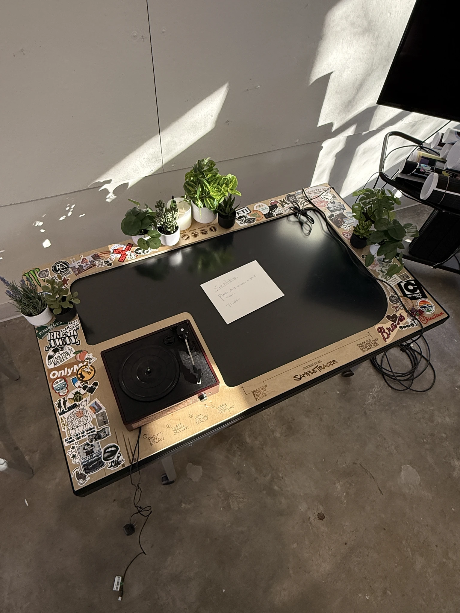
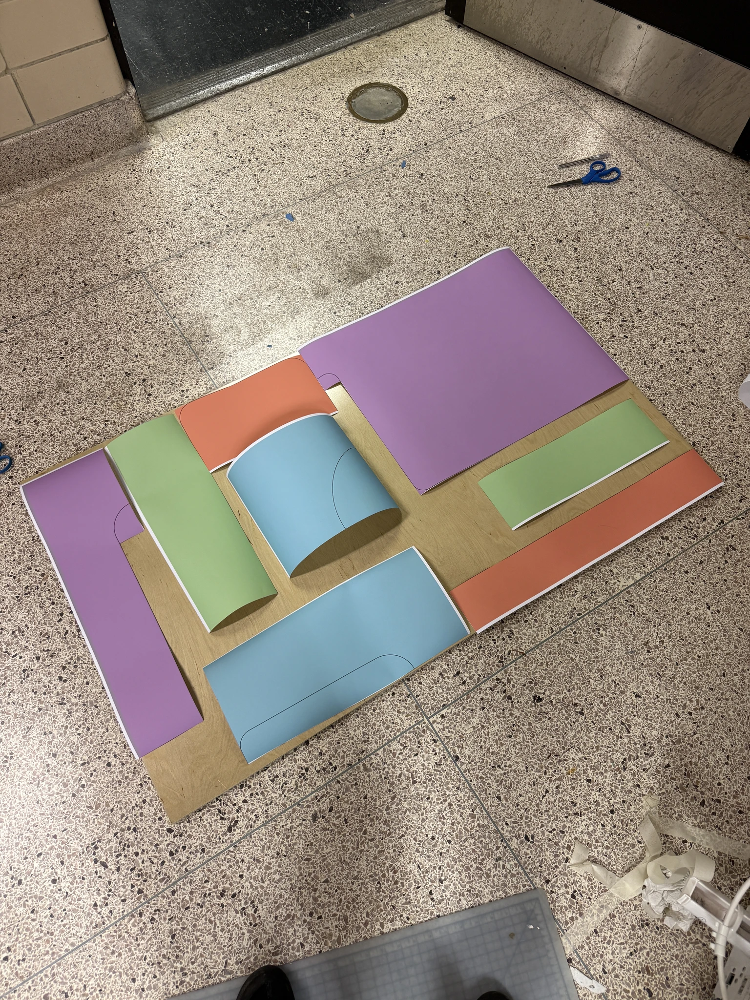
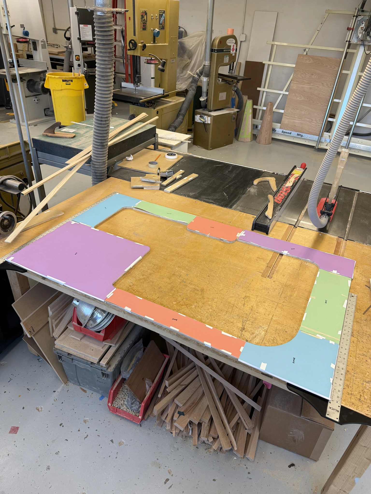
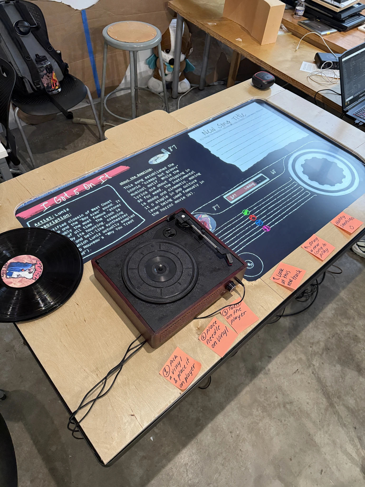
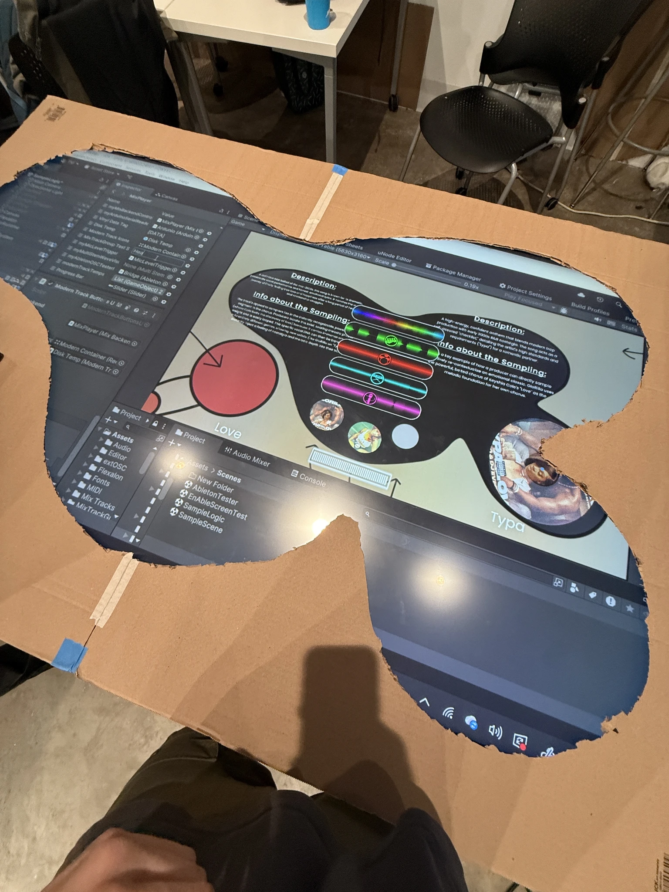
From countless nights testing Unity compatibility to putting the final aesthetic touches on our physical presentation, we worked to build something cohesive, digestible, educational, and, most importantly, really cool.
Process
Sampling ideation
Having a team that all loved and/or studied music, we decided to hone in on sampling. We wanted to show others how musicians will chop up and utilize older pieces of music for modern reuse.

Building an experience
Learning to build an experience purely for educational engagement was very difficult. After we determined to use a touch screen, we had to figure out how to build its layout.
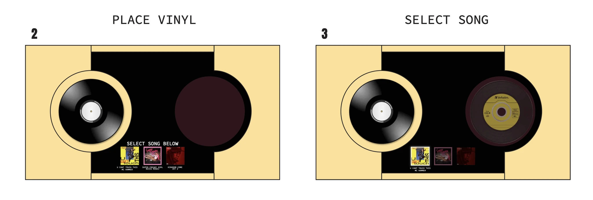
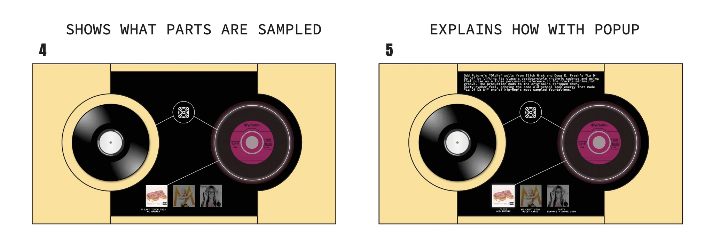
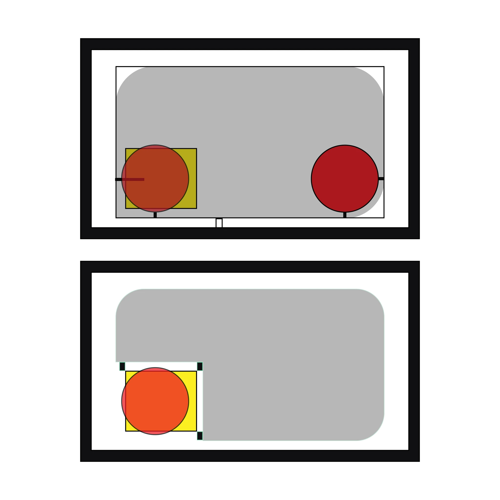
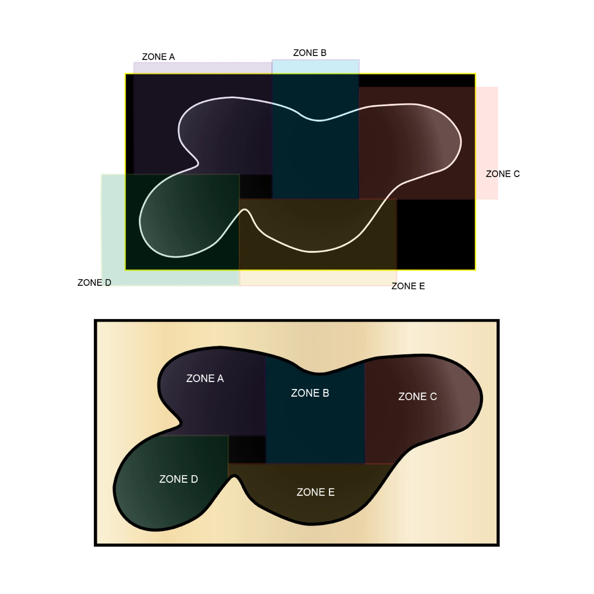
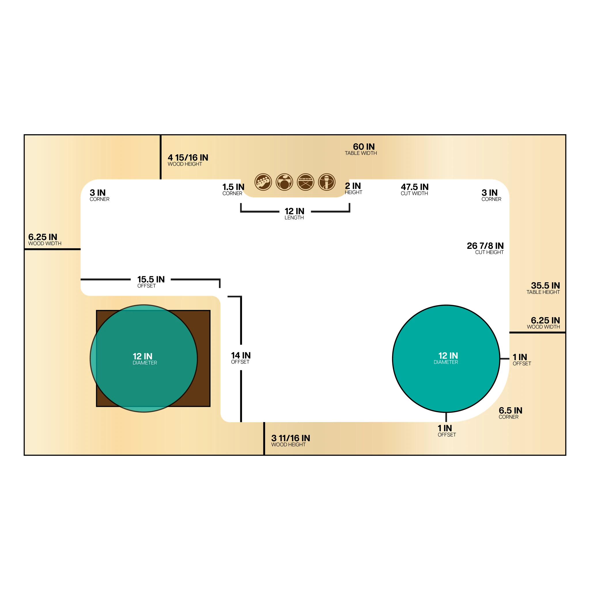
Putting it together
Following our technology research, we decided that our solution had to be multi-pronged. We needed to ease on-road navigation, but this would require many different features. These features were crafted and packaged through a plethora of meetings and user analysis sessions.
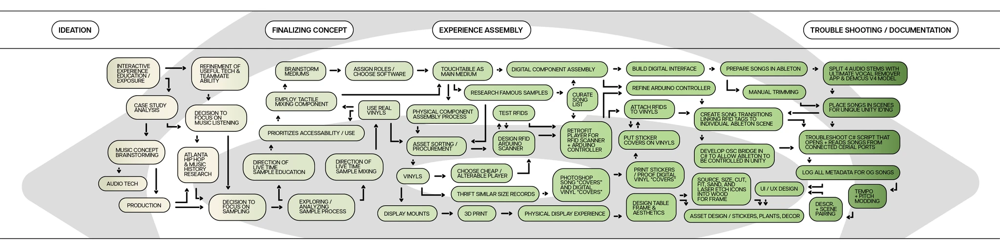